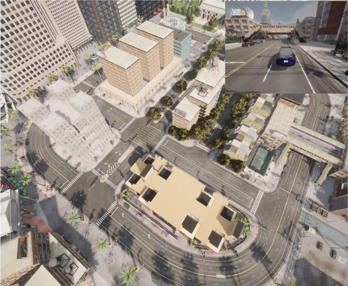

Research Projects
AiX Lab Simulation Environment
Research Infrastructure
2024

A cost-effective simulation environment designed for autonomous driving research, featuring an immersive triple-monitor setup and comprehensive data collection tools.
Developed cost-effective simulation environment
Integrated triple-monitor setup with racing wheel
Created driver behavior analysis tools
Reinforcement Learning for Autonomous Driving
Machine Learning Research
2023

Implementation of a reinforcement learning agent capable of navigating complex driving scenarios in the CARLA simulator, demonstrating autonomous navigation capabilities.
Implemented RL agent using OpenAI Gym
Trained for complex driving scenarios
Demonstrated autonomous navigation